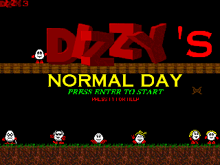

|
| |
 Not so long ago, I was introduced by my good friend Chris to the joys of the dictionary. Now, I'm sure you're all confused - 'But Nathan!' I hear you cry, 'Not only are you so preposterously literate as to no longer require a dictionary, merely annual updates on new words from those lovely folks at Oxford, but surely all the fun you can have with a dictionary is exhausted after the first twenty-five minutes of looking up rude words?' And while you're absolutely right on the first point, you're actually completely wrong on the second. You see, the dictionary my esteemed associate introduced me to was an Old Dictionary. A dictionary of such advanced years that it did not contain a page declaring its date of print. As such, a good hour was spent trying to determine its era of origin, by way of looking up certain words. ('Car' resulted in the definition of a horse or train-drawn carriage, while 'motorcar' produced a more familiar result.) Eventually we were able to pin it down to the early years of the twentieth century, by way of its technological references, political omissions and a brief passing reference to the year of date in an entry about China. (1913, in case you were wondering, which was gratifyingly close to our estimate.) You're probably curious as to why I'm talking about this dictionary rather than reviewing the game, unless you're familiar with my reviewing style in which case you're waiting for the lengthy discourse on the political ramifications of the Boxer Revolution and the resultant effect on my eating habits. I mention the dictionary because not only did we get more than an hour's entertainment from dating the dictionary, but further entertainment was to be had from the poetic definitions of words that called desperately for a long-running series of features in this very magazine. As it is, the common sense of others has prevailed, and the benefits of that dictionary will be limited to what is relevant. A shame, because in a book where even the simple word 'finless' can be made beautiful by its definition - 'Destitute of fins' - there is much comedy to be had. As it is, I am restricted to a single word, and its single word definition. 'Nostalgia - Homesickness.' |
|